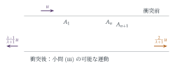

STEP II 1990、第14問
先に進む前に問題を読んでおこう。問題は STEP Support Programme の問題データベースにある： step.maths.org/questions/90-s2-q14
導入
ニュートンのゆりかご（Newton’s cradle）の球を1個引いて放すと、反対側の端から球が1個飛び出す。2個引けば2個飛び出す。なぜだろうか。なぜ2倍の速さで1個、あるいは3分の2の速さで3個、とはならないのか。どちらでも運動量はつじつまが合うはずである。
答えは、力学の二大保存則から始まる。運動量（momentum）とエネルギー（energy）を合わせると、どちらか一方だけの場合よりもはるかに強い制約となり、思いつく結果の大部分が排除される。この問題では保存則を制約として用いる。何が起こるかを計算するためではなく、何が起こりうるかを判定するためである。保存則を「起こりうるすべての結果が従わねばならない規則」とみなすこの考え方は、物理学全体を貫いている。
取りかかる前に
質量 \(m\) のビー玉が速さ \(u\) で、静止している質量 \(M\) のビー玉に衝突し、運動エネルギー（kinetic energy）が保存されるとする。衝突後の速度はいくらか。\(M = m\) の場合はどうなるか。
衝突後の速度を \(p\), \(q\) とする。運動量保存より \(mp + Mq = mu\)、エネルギー保存より \(mp^2 + Mq^2 = mu^2\) である。これらを \(m(u - p) = Mq\) および \(m(u - p)(u + p) = Mq^2\) と書き直して割ると、\(u + p = q\) を得る。したがって \[p = \frac{m - M}{m + M}\,u, \qquad q = \frac{2m}{m + M}\,u.\] \(M = m\) のとき、1個目のビー玉は止まり、2個目が速さ \(u\) で動き出す。つまり2個は単に速度を交換するのである。等しい質量のビー玉が一列に運動を受け渡していくのはこのためである。
順を追って解く
段階 1 最後の2個だけが動く場合
衝突後に \(A_n\)（速度 \(p\)）と \(A_{n+1}\)（速度 \(q\)）だけが動くと仮定する。保存則を書き下せ。\(p\) の符号を制約するのはどのビー玉の運動か。
運動量保存とエネルギー保存より \[mp + \lambda mq = mu, \qquad \tfrac12mp^2 + \tfrac12\lambda mq^2 = \tfrac12mu^2.\] これは質量 \(m\) のビー玉が質量 \(\lambda m\) のビー玉に衝突するときの方程式と同じであるから、（\(A_n\) が \(A_{n+1}\) をすり抜けることを要する解 \(p = u\), \(q = 0\) を除いて） \[p = \frac{1 - \lambda}{1 + \lambda}\,u, \qquad q = \frac{2}{1 + \lambda}\,u.\] \(\lambda < 1\) ならば両者とも正で \(p < q\) である。\(A_n\) は \(A_{n+1}\) を追いかけるがより遅いので両者は離れていき、すべてつじつまが合う。\(\lambda > 1\) ならば \(p < 0\) となり、\(A_n\) は後ろ向きに動く。しかし \(A_{n-1}\) がそのすぐ後ろに接して静止しており、\(A_n\) はそれをすり抜けることはできない。よってこの運動は不可能である。■
段階 2 3個のビー玉
次に、\(A_{n-1}\), \(A_n\), \(A_{n+1}\) だけがそれぞれ速度 \(a\), \(b\), \(c\) で動くと仮定する。どのビー玉が静止していて、どれがどれの後ろにあるかを考えると、\(a\), \(b\), \(c\) はどのような不等式を満たさなければならないか。
ビー玉 \(A_{n-2}\) は \(A_{n-1}\) の後ろで静止している（\(n \geq 3\) よりこれは存在する）ので、\(a \geq 0\) である。また、どのビー玉も前のビー玉を追い越すことはできないので、\(a \leq b \leq c\) である。まとめると \(0 \leq a \leq b \leq c\) となる。保存則は \[a + b + \lambda c = u, \qquad a^2 + b^2 + \lambda c^2 = u^2.\]
運動量の式を2乗して、エネルギーの式と比べよ。何が残るか。
2乗すると \(u^2 = a^2 + b^2 + \lambda^2c^2 + 2ab + 2\lambda ac + 2\lambda bc\) である。ここからエネルギーの式を引くと \[0 = \lambda(\lambda - 1)c^2 + 2ab + 2\lambda c(a + b).\] \(\lambda > 1\) かつ \(a, b, c \geq 0\) であるから、右辺の各項はすべて非負であり、したがってすべての項が \(0\) である。特に \(c = 0\) であり、すると \(0 \leq a \leq b \leq c\) より \(a = b = 0\) となる。しかしこのとき運動量の総和は \(mu\) ではなく \(0\) となる。これは矛盾であり、この運動は不可能である。■
この議論の構造に注目しよう。運動量の式を2乗すると \(2ab\) のような交差項が現れるが、エネルギーの式にはそれがない。その差は、運動がどれだけ「広がっているか」を測っている。\(\lambda > 1\) のとき、同じ議論によって、\(A_k, \ldots, A_{n+1}\) だけが非負の速度で動くような任意の結果が排除される理由がわかるだろうか。
段階 3 動くことのできる2個のビー玉
前向きに動くビー玉がすべて遠い端になければならず、それがうまくいかないのなら、あるビー玉が後ろ向きに動くのかもしれない。後ろ向きに動くことができるのはどのビー玉か。
後ろに何もないのは \(A_0\) だけである。そこで、\(A_0\) が速度 \(p\)（負でもよい）で、\(A_{n+1}\) が速度 \(q\) で動き、他はすべて静止していると仮定してみる。保存則はやはり質量 \(m\) と \(\lambda m\) の衝突のものと同じであるから \[p = -\frac{\lambda - 1}{\lambda + 1}\,u, \qquad q = \frac{2}{\lambda + 1}\,u.\] \(A_0\) は跳ね返り、\(A_{n+1}\) は前へ動き、その間のビー玉は静止したままである。これはすべてつじつまが合う。あたかも \(A_0\) が \(A_{n+1}\) に直接衝突したかのようであり、その間に並ぶ等しいビー玉は完璧な伝令の役目を果たしている。■

振り返り
制約としての保存則。衝突を細かく追うことは一度もしなかった。運動量、エネルギー、そして幾何学的条件によって、どの結果が許されるかを問うたのである。
物理的な不等式が重要である。「ビー玉は互いにすり抜けられない」ということから不等式 \(0 \leq a \leq b \leq c\) が得られ、小問 (i) と (ii) を排除したのは保存則ではなくこの不等式であった。
2乗して引く。運動量の2乗とエネルギーを比べると、\(0\) にならなければならない交差項の和が得られる。
背後にある数学
なぜ球が1個だけ飛び出すのか
等しい球からなるニュートンのゆりかごで、\(k\) 個の球がそろって速さ \(w\) で飛び出すとする。運動量保存より \(kw = u\)、エネルギー保存より \(kw^2 = u^2\) である。割り算をすると \(w = u\) かつ \(k = 1\) となる。したがって、飛び出す球がそろって動く結果のうち、両方の法則を満たすのは「1個の球が元の速さで飛び出す」ものだけである。半分の速さの2個の球は運動量は正しいがエネルギーは半分しかない。2倍の速さの1個の球が正しい運動量をもつのは、それが球の半分である場合に限られる。
しかし、これで決着がつくわけではない。\(n\) 個の球があれば未知の速度は \(n\) 個あるのに保存則は2つしかないので、両方を満たす結果は無数にある（3個の球が異なる速さで動くものを1つ見つけてみよ）。実際にどれが起こるかは、接触中に球がどのように変形するかによる。1980年代初頭、Frank Herrmann とその共同研究者たちは、おなじみの振る舞いは衝撃が列に沿って広がることなく伝わることに依存しており、それはわずかな隙間を空けて並べた硬い鋼球で起こることを示した。柔らかい球や、互いにきつく押しつけられた球では、ゆりかごの振る舞いはそれほどきれいではなくなり、精密な測定によれば、他の球も常にわずかに動いている。
保存則と対称性
保存則はどこから来るのだろうか。1918年、エミー・ネーター（Emmy Noether）は、現代物理学の基礎の1つとなる定理を証明した。物理系の連続的な対称性（symmetry）のそれぞれから、保存量が1つ得られるというものである。物理法則がここでも1メートル左でも同じであれば（空間並進に関する対称性）、運動量が保存される。今日も明日も同じであれば（時間並進に関する対称性）、エネルギーが保存される。どの向きにも同じであれば（回転対称性）、角運動量が保存される。ネーターの定理には、大学2年次のラグランジュ力学の講義で出会うことになるだろう。本章では全体を通してその帰結を用いる。
1668年、王立協会は物体の衝突の問題に対する解答を募った。ジョン・ウォリスは非弾性衝突を扱い、クリストファー・レンとクリスティアーン・ホイヘンスはそれぞれ独立に弾性衝突（elastic collision）の場合を解いた。ホイヘンスの鍵となる洞察は、座標系を変えることであった。重心とともに動く船から衝突を眺めると、2つの等しい球は単に速さが逆向きになって跳ね返るだけであり、その後、岸の座標系に戻せばよい。彼はまた、ある量、すなわち質量と速さの2乗の積の和が衝突の前後で等しいことにも気づいていた。もっとも、運動エネルギーがそれ自体として保存量であると認められるまでには、さらに1世紀を要した。
思考のスキル
過程が複雑すぎて追いきれないときは、変化しえない量を列挙し、それらがどの結果を許すかを調べよ。
これは、物理学者が粒子加速器での衝突について推論する方法である。そこでは詳細な相互作用はわからないが、運動量、エネルギー、電荷はつり合わなければならない。不等式（ここでは、ビー玉が互いにすり抜けられないこと）と組み合わせれば、ある結果が不可能であることを証明できる。
次の一歩
同じ問題をもう一度。STEP I 2006、第11問 に挑戦してみよう。溝の中に粒子が一列に並び、端により重い粒子がある。どのような最終状態が可能か。
衝突を追う。小問 (iii) の衝突を、\(A_0\) が \(A_1\) に衝突するところから始まる、2個のビー玉どうしの別々の衝突の連続としてモデル化せよ。その連続を最後まで追い、小問 (iii) で求めた運動に行き着くことを示せ。
2個の球を当てる。5個の等しい球からなるゆりかごで、2個の球をそろって放し、残りの3個に速さ \(u\) で衝突させる。「2個の球が速さ \(u\) で飛び出す」が両方の保存則と矛盾しないことを示し、さらに矛盾しない別の結果を1つ求めよ。
軽い端。\(\lambda < 1\) の場合について、2個のビー玉どうしの衝突の連続を追え。\(A_n\) と \(A_{n+1}\) 以外に、最終的に動いているビー玉はあるか。
さらに学ぶために
David Morin, Introduction to Classical Mechanics（Cambridge University Press）、第5章。運動量とエネルギーの保存について、衝突に関する多くの問題とともに扱っている。
Frank Herrmann & Peter Schmälzle, 「Simple explanation of a well-known collision experiment」, American Journal of Physics 49 (1981)。ニュートンのゆりかごがなぜうまく働くのかを説明している。
Dwight Neuenschwander, Emmy Noether’s Wonderful Theorem（Johns Hopkins University Press）。対称性と保存則の結びつきについての、読みやすい解説である。